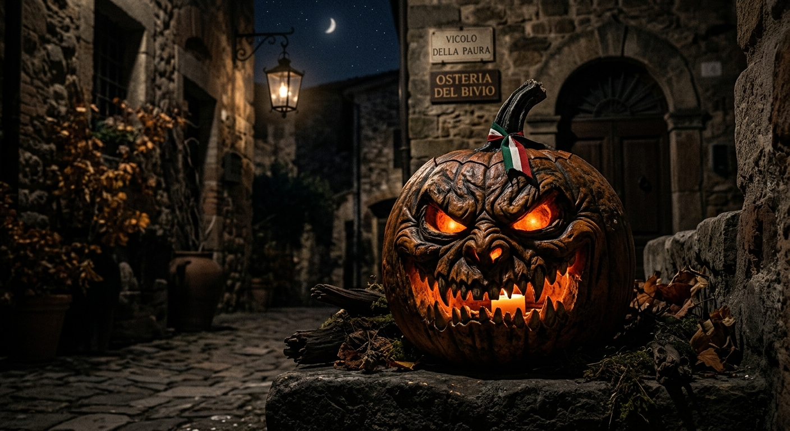
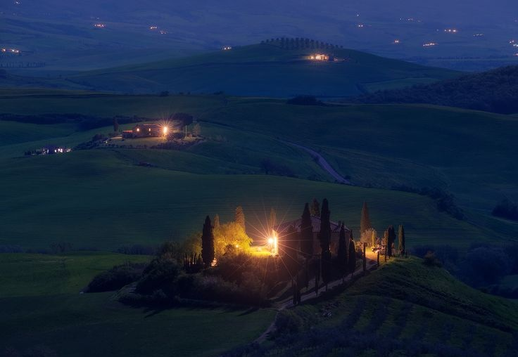
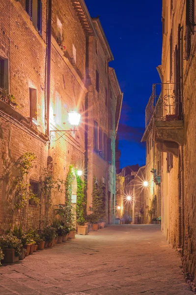
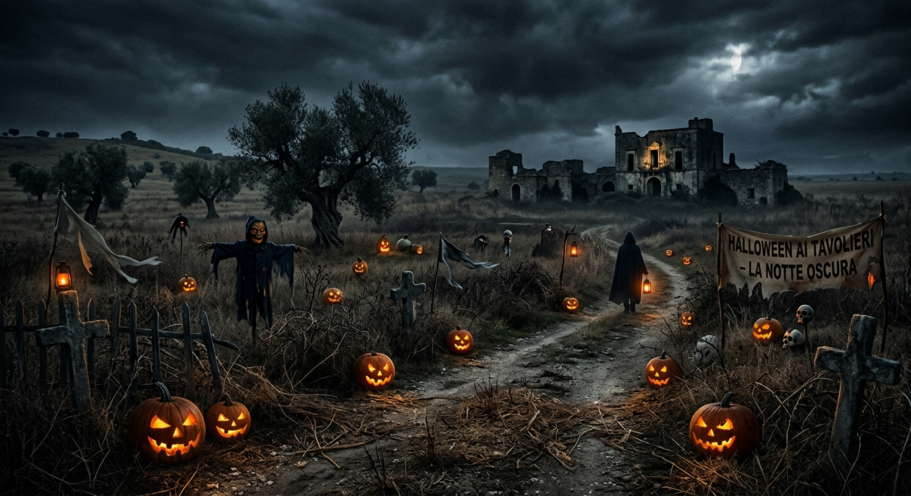

The autumn wind blowing across the plains of Apulia did not carry the crisp, apple-scented chill of northern climates. Instead, it was dry and heavy, smelling of baked earth, crushed rosemary, and the ancient dust of the tavoliere—the great tableland of Southern Italy. It was October 31st. To the locals in the small village of Ruvo, it was simply the eve of Ognissanti—All Saints' Day. But to Leo, an American expat who had recently bought a dilapidated masseria among the olive groves, it was Halloween. Leo laughed at the warnings of his elderly neighbor, Nonna Francesca. That morning, she had watched him carving a makeshift jack-o'-lantern out of a local winter squash. "Tonight is the Notte dei Morti," she had warned, her voice rustling like dry corn husks. "The veil is thin, Luigi. Do not leave the gates of your masseria. The dead do not walk the streets of the city; they walk the fields where they bled." Leo had smiled, thanked her, and gone back to his renovations. He didn’t believe in ghosts, let alone ancient Italian ones.
As dusk fell, the landscape transformed. The gnarled, centuries-old olive trees, with their hollowed-out trunks and twisted branches, looked like agonizing giants frozen in time. The sky turned the color of bruised plums. Leo lit his carved squash, placing it on the stone wall of his courtyard. The flickering candle cast long, dancing shadows across the white limestone. Around midnight, a sudden, dead calm fell over the plains. The relentless crickets fell silent. Then came the sound. It wasn't a howl or a scream, but a low, rhythmic thrumming. Boom-chica-boom-chica-boom. It sounded like a drum beat, vibrating straight through the limestone floorboards of the house. Intrigued, Leo stepped out onto the terrace. The sound was coming from the deep olive groves bordering his property. Accompanying the drum was a frantic, breathless melody played on a tambourine and a piercing violin. It was the tarantella—but stripped of its festive joy. This music sounded desperate, manic, and ancient. Driven by curiosity, Leo grabbed a flashlight and clicked it on. He walked past his glowing jack-o'-lantern and stepped out into the open fields. The moonlight was bright enough to illuminate the red soil beneath his boots. As he walked deeper into the grove, the air grew freezing cold, an unnatural frost coating the silver leaves of the olive trees. The music grew louder, wrapping around him until his own heart began to match the frantic thumping of the drum. He stepped into a wide clearing where a monumental olive tree, easily a thousand years old, split the earth. There, under the moonlight, a crowd was dancing.

Leo froze, his flashlight dropping to his side. They were dressed in the tattered linen clothing of 19th-century peasants, their garments stained with the red clay of the fields. But it was their movement that terrified him. They weren't dancing for pleasure. They were leaping, spinning, and collapsing into the dirt, their bodies contorting violently as if possessed. It was the tarantati—the legendary souls who, bitten by the wolf spider, were doomed to dance until they purged the poison or died of exhaustion. Only these dancers had no skin. Through the gaps in their tattered clothes, Leo saw pale bone and hollow ribcages. Their faces were sunken masks of ancient grief, their eyes empty sockets fixed on the center of the circle. In the middle of the clearing stood a tall woman, her long black hair whipping around her face despite the lack of wind. She beat a heavy tambourine, her fingers bloody, her gaze locked onto Leo.
The music stopped instantly. The only sound was the whistling of the wind through the hollow trunks. The skeletal dancers slowly turned their heads toward Leo. A collective, rattling sigh rose from the crowd. "An intruder in the groves," the woman with the tambourine whispered, her voice echoing in Leo’s mind. "A living soul to share the poison." Leo tried to run, but his feet felt rooted to the red earth, heavy as lead. The skeletal peasants began to advance, their bony hands outstretched, their jaws clicking open in a silent, horrific invitation to dance. They closed the distance with terrifying, jerky speed. Desperate, Leo remembered Nonna Francesca’s words: The dead walk the fields where they bled. They belonged to this earth, to the old ways. With a burst of adrenaline, Leo broke the paralysis. He didn't run away; instead, he reached into his pocket and pulled out his heavy brass house key, stamping it hard into the red soil at his feet, crossing it with a broken olive twig—an old gesture of boundary-marking he’d seen the locals use. "This is my land now!" Leo shouted into the dark, his voice trembling. "The harvest is done!"
The woman with the tambourine hissed, a sound like a nesting viper. The skeletal dancers halted just inches from him. The cold breath radiating from them smelled of damp earth and rosemary. For a breathless second, the ancient dead stared at the modern intruder. Then, the woman struck her tambourine once more. A sharp, deafening crack echoed through the grove. A sudden gust of wind whipped up the red dust, blinding Leo. He threw his arms up to shield his eyes, coughing as the dirt filled his throat. When the wind died down a moment later, the clearing was empty. The music was gone. The dancers were gone. There was only the gentle rustling of the silver olive leaves above him and the distant, familiar chirping of a lone cricket. Leo walked back to his masseria in total silence, his boots caked in red clay. He didn't look back at the groves. When he reached his courtyard, his carved squash had burned out, leaving only a cold, hollow shell in the dark. He locked the heavy wooden doors behind him and sat by the fireplace, waiting for the safety of the morning sun to wash over the southern plains.
👉 Click here to see the Italian Pumpkin
